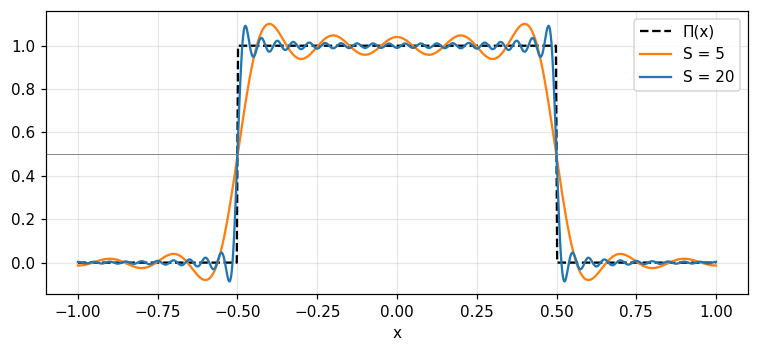
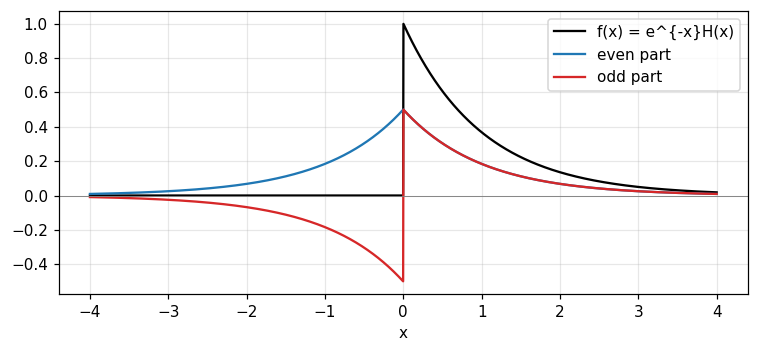
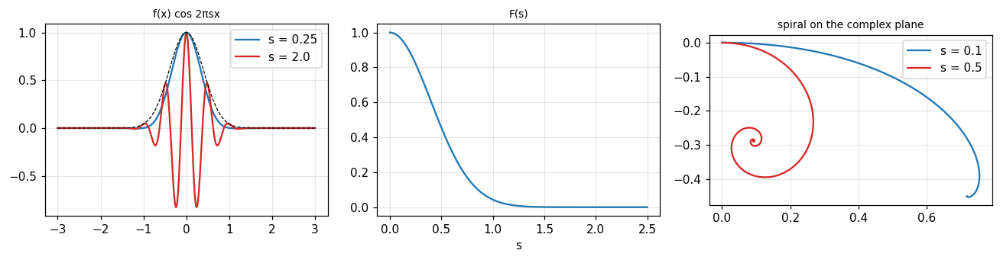
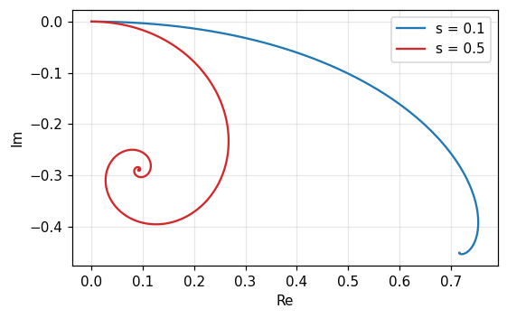

1/5 · The Fourier transform and Fourier's integral theorem
The cyclic property: two transforms
Transforming F(s) once more with the same formula gives f(-x). For an even function we recover exactly f(x): that is the two-step cyclic property and it implies reciprocity, if F is the transform of f then f is the transform of F (p. 5). For an odd or general function the result is f(-x) (p. 6).
Two transforms
\mathcal F\mathcal F f=f(-x)
1/5 · The Fourier transform and Fourier's integral theorem
Numerical test: two transforms return f(-x)
For a 64-point sequence that is neither even nor odd, \frac1N\,\text{DFT}(\text{DFT}(v)) equals the reversed sequence v[-n] (largest deviation 1.8e-14) and four transforms return exactly v (deviation 5.4e-16). The check uses both the FFT and a hand-built DFT matrix.
1/5 · The Fourier transform and Fourier's integral theorem
The "minus-i" and "plus-i" transforms
Two transforms with the same formula do not return the original function. To invert, use the opposite exponent sign. Bracewell calls F the "minus-i" transform of f and f the "plus-i" transform of F (p. 6).
1/5 · The Fourier transform and Fourier's integral theorem
Fourier's integral theorem
Writing the two successive transformations as a repeated integral gives the usual statement. At a discontinuity the left side must be replaced by the mean of the two one-sided limits (p. 6).
1/5 · The Fourier transform and Fourier's integral theorem
Numerical test: rebuilding the rectangle at its jump
The transform of \Pi(x) is \text{sinc}\,s. Cut the inverse transform at |s|\le S and evaluate at x=0.5 (the jump of \Pi): S=5 gives 0.4899, S=20 gives 0.4975, S=100 gives 0.4995, approaching 0.5, the mean of 1 and 0. At x=0.25 (inside the pulse) we get 0.9973, at x=1 (outside) we get 0.0007.

Figure 1. The inverse transform of sinc truncated at |s| ≤ S tends to Π(x); at the jump x = ±0.5 every curve passes through 0.5, the mean of 1 and 0.
1/5 · The Fourier transform and Fourier's integral theorem
Three systems of constants
The constant 2\pi can sit in the exponent (system 1), in the variable (system 2), or be split evenly by 1/\sqrt{2\pi} (system 3). This course keeps system 1 like the book. If f(x) and F(s) are a pair in system 1 then f(x) and F(s/2\pi) are a pair in system 2 (p. 6).
System
F
f
1
\int f\,e^{-i2\pi xs}dx
\int F\,e^{i2\pi xs}ds
2
\int f\,e^{-isx}dx
\frac1{2\pi}\int F\,e^{isx}ds
3
\frac1{\sqrt{2\pi}}\int f\,e^{-isx}dx
\frac1{\sqrt{2\pi}}\int F\,e^{isx}ds
1/5 · The Fourier transform and Fourier's integral theorem
Notation: F(s), the bar and the operator \mathcal F
Bracewell uses three notations, each with merits. The capital F(s) suits conjugates and derivatives. The bar over f is compact for statements such as the convolution theorem. The operator \mathcal F suits the transform of a specific function (pp. 7 to 8). The sign \supset marks the forward direction, while \leftrightarrow is for symmetric reversible transforms such as cosine, Hilbert and Hartley (p. 8).
A self-transforming pair
e^{-\pi x^2}\ \supset\ e^{-\pi s^2}
1/5 · The Fourier transform and Fourier's integral theorem
Numerical test: Gaussian and sech transform into themselves
Numerical integration gives the transform of e^{-\pi x^2} at s=0.5 as 0.4559, exactly e^{-\pi/4}. The transform of \text{sech}(\pi x) at s=0.5 is 0.3985, exactly \text{sech}(\pi/2). These two functions (with \text{III}) are the self-transforming functions Bracewell lists in problem 20 (p. 23).
PART 2/5
02
Existence conditions and transforms in the limit
Situation: A circuit designer takes it for granted that every waveform has a spectrum.
Complication: Mathematically, familiar functions such as \sin t, the step and the impulse have no ordinary Fourier transform.
Resolution: Physical possibility always guarantees existence, and the remaining functions are admitted through transforms in the limit.
Sufficient conditions and infinite-energy duality
Modulated Gaussians and generalized functions
The sign function and problem 3
2/5 · Existence conditions and transforms in the limit
Physical possibility is a sufficient condition
A circuit expert finds it obvious that every waveform has a spectrum, and the antenna designer is confident that every antenna has a radiation pattern. No one can generate a waveform without a spectrum. When the function describes a physical quantity accurately, the question of existence can be ignored (Bracewell, p. 8).
2/5 · Existence conditions and transforms in the limit
Three familiar functions without an ordinary transform
We often replace a physical quantity by a neat expression such as \sin t, H(t) and \delta(t). None strictly has a Fourier transform because the Fourier integral does not converge for all s. Physically none can be made either: \sin t would have to be switched on an infinite time ago, H(t) held steady for an infinite time, \delta(t) infinitely large for an infinitely short time (p. 8).
2/5 · Existence conditions and transforms in the limit
Two sufficient conditions
Transforming and retransforming a single-valued function f(x) returns f(x), or \tfrac12[f(x^+)+f(x^-)] at a discontinuity, provided (p. 9):
The integral of |f(x)| over the whole axis exists.
Any discontinuities of f(x) are finite.
Absolute integrability
\int_{-\infty}^{\infty}|f(x)|\,dx<\infty
2/5 · Existence conditions and transforms in the limit
Duality: infinite energy violates both
In physical terms the conditions are violated when there is infinite energy. Direct current that has always flowed represents infinite energy and violates the first condition; the energy distribution over frequency would have infinite energy concentrated at zero frequency and violates the second. The same applies to harmonic waves (p. 9).
2/5 · Existence conditions and transforms in the limit
Infinitely many maxima: \sin(1/x) and bounded variation
It is sometimes stated that infinitely many maxima and minima in a finite interval disqualify a function, the stock example being \sin(1/x). Bracewell notes this is unimportant in real life and that some such functions do have transforms. Bounded variation, a Lipschitz condition and Dini's condition are further relaxations (p. 9).
2/5 · Existence conditions and transforms in the limit
Transforms in the limit: multiply by a decaying factor
A periodic function P(x) has no transform because \int|P| does not exist. Multiply by e^{-\alpha x^2} (\alpha small and positive) and the modified function may have one. As \alpha\to0 the modified functions approach P(x), and the corresponding sequence of transforms defines a generalized function. The periodic function and the generalized function form a transform pair in the limit (p. 10).
2/5 · Existence conditions and transforms in the limit
Numerical test: e^{-\alpha x^2}\cos(10\pi x) as \alpha\to0
The spectrum has two peaks at s=\pm5. The height at s=5 is 0.8862 (\alpha=1), 2.8025 (\alpha=0.1), 8.8623 (\alpha=0.01), growing like \tfrac12\sqrt{\pi/\alpha} without limit. The peak width shrinks 0.2251, 0.0712, 0.0225. The area of each peak is always 0.5. The sequence has no pointwise limit but tends to the impulse pair \tfrac12\delta(s-5)+\tfrac12\delta(s+5).
Figure 2. The transform of e^{−αx²}cos(10πx) near s = 5: as α decreases the peak grows taller and narrower with the area unchanged, tending to an impulse.
2/5 · Existence conditions and transforms in the limit
Generalized functions and limit pairs
Dealing with things that are not functions but are describable by sequences of functions is familiar in physics through the impulse symbol. In the limit pair of a periodic function, only one member is a generalized function involving impulses. If something is both impulsive and periodic, both members are generalized functions. The rigorous definition is deferred to chapters 5 and 6 (pp. 10 to 11).
2/5 · Existence conditions and transforms in the limit
Numerical test and problem 3: the sign function
Problem 3 states that the transform in the limit of \text{sgn}\,x is (i\pi s)^{-1}. With the factor e^{-\alpha|x|}: the imaginary part of the transform at s=0.5 is -0.636 (\alpha=0.1), -0.6366 (\alpha=0.01), -0.6366 (\alpha=0.001), approaching -0.6366 =-1/(\pi s). Numerical integration and the closed form agree at every \alpha.
Situation: Symmetry arguments show that many integrals vanish without evaluating them.
Complication: But it takes alertness to exploit the symmetry fully, in the function and in its transform.
Resolution: Split into even and odd parts, then read the table of real, imaginary, even, odd and Hermitian symmetry.
The unique even-odd split and its dependence on the origin
The symmetry table and its numerical check
Hermitian functions
3/5 · Even, odd and symmetry
Even and odd functions
A function E(x) with E(-x)=E(x) is symmetrical or even; O(x) with O(-x)=-O(x) is antisymmetrical or odd. The sum of even and odd functions is in general neither (Bracewell, p. 11).
3/5 · Even, odd and symmetry
The unique even and odd parts
Any function splits uniquely into even and odd parts. Proof: if f=E_1+O_1=E_2+O_2 then E_1-E_2=O_2-O_1 is both even and odd, hence zero (p. 11). The even part is the mean of the function and its reflection in the vertical axis, the odd part is the mean of the function and its negative reflection (p. 12).
For e^{-x}H(x): the even part is \tfrac12e^{-|x|}, the odd part \tfrac12\text{sgn}(x)e^{-|x|}. At x=1 both equal 0.1839; at x=-1 the even part is still 0.1839 while the odd part is -0.1839. For e^{x}: the even part is \cosh x (1.5431 at x=1) and the odd part \sinh x (1.1752). This is Bracewell's problem 6.

Figure 3. The causal function e^{−x}H(x) (black) splits uniquely into an even part (blue) and an odd part (red); adding them returns the original.
3/5 · Even, odd and symmetry
Dependence on the origin
The even-odd split changes with the origin of x. The function \cos x is fully even, but shifting the origin by a quarter period turns it into \sin x, fully odd (p. 12). So "even or odd" must always be stated with the origin.
3/5 · Even, odd and symmetry
Problem 17: the even-plus-odd energy is invariant
The sum \int|o|^2dx+\int|e|^2dx does not change when the origin shifts and equals \int|f|^2dx because the cross term even times odd integrates to zero. For f=e^{-x^2} that constant is \sqrt{\pi/2} = 1.2533. The even share of the energy is 1 for a=0, 0.8033 for a=0.5, 0.5677 for a=1, 0.5002 for a=2 (far from the origin it splits evenly).
3/5 · Even, odd and symmetry
Meaning: the transforms of the even and odd parts
Write f=E+O with E,O possibly complex. The Fourier transform reduces to a cosine and a sine integral. Hence an even function has an even transform and an odd function an odd transform (p. 13).
The table on pp. 13 to 14 gives the symmetry of F(s) from the symmetry of f(x) (Fig. 2.5, p. 15):
f(x)
F(s)
real and even
real and even
real and odd
imaginary and odd
imaginary and even
imaginary and even
imaginary and odd
real and odd
real and asymmetrical
Hermitian
real even plus imaginary odd (Hermitian)
real
real odd plus imaginary even (anti-Hermitian)
imaginary
3/5 · Even, odd and symmetry
Numerical test: checking the table with the DFT
With random sequences built to have each symmetry, the DFT satisfies 6 of 6 rows of the table. An engineering consequence: a real signal has a Hermitian spectrum so only half of it need be stored. A real 1000-sample signal has 1000 FFT coefficients but only 501 independent ones, and the energy 625 is fully recovered from the half spectrum.
PART 4/5
04
Complex conjugates, cosine and sine transforms
Situation: The symmetry table gives only the form, not the exact relations between f, f^* and F.
Complication: For a function defined only on the positive axis, the Fourier transform is often replaced by the cosine or sine transform.
Resolution: Conjugation gives eight compact relations, and the cosine and sine transforms are transforms of the even and odd extensions.
Transform of the complex conjugate and the relation table
Cosine and sine transforms, each its own inverse
Causal functions
4/5 · Complex conjugates, cosine and sine transforms
Transform of the complex conjugate
The Fourier transform of f^*(x) is F^*(-s), the reflection of the conjugate of the transform. For real f, the transform of f^*=f is F(s), so F(s)=F^*(-s) (Bracewell, p. 14).
Complex conjugate
f^*(x)\ \supset\ F^*(-s)
4/5 · Complex conjugates, cosine and sine transforms
Hermitian functions
A function whose real part is even and imaginary part odd is called Hermitian, defined compactly by f(x)=f^*(-x). Its transform is real. Proof: for f=E+O+iE'+iO' we have f^*(-x)=E-O-iE'+iO'; requiring f=f^*(-x) forces O=0 and E'=0, leaving f=E+iO' (p. 14).
Hermitian
f(x)=f^*(-x)\;\Longrightarrow\;F(s)\ \text{real}
4/5 · Complex conjugates, cosine and sine transforms
The eight-line relation table
Bracewell tabulates the related pairs (p. 16):
f(x)
F(s)
f(x)
F(s)
f^*(x)
F^*(-s)
f^*(-x)
F^*(s)
f(-x)
F(-s)
2\,\text{Re}\,f
F(s)+F^*(-s)
2i\,\text{Im}\,f
F(s)-F^*(-s)
f(x)+f^*(-x)
2\,\text{Re}\,F
f(x)-f^*(-x)
2i\,\text{Im}\,F
4/5 · Complex conjugates, cosine and sine transforms
Numerical test: checking the table with the DFT
For a random complex sequence, 7 of the 7 non-trivial relations in the table hold to rounding error, each checked by comparing both sides directly through the DFT.
4/5 · Complex conjugates, cosine and sine transforms
The cosine transform
The cosine transform of f(x) is defined for s>0 and uses f only on the positive side. It agrees with the Fourier transform when f is even. Notably, the forward and reverse operations have the same formula, so the cosine transform is its own inverse (pp. 16 to 17).
4/5 · Complex conjugates, cosine and sine transforms
The sine transform
The sine transform is also its own inverse. i times the odd part of the Fourier transform of f equals the sine transform of the odd part of f, for s>0 (p. 17). So the Fourier tables of even and odd functions in chapter 22 give cosine and sine tables.
4/5 · Complex conjugates, cosine and sine transforms
Causal functions: combining cosine and sine
If f(x)=0 for x<0 then F(s)=\tfrac12F_c(s)-\tfrac12iF_s(s) (p. 17). For f=e^{-x}H(x) at s=0.2: F_c=0.7755, F_s=0.9745, so F=0.3877+(-0.4872)\,i, matching 1/(1+i2\pi s). The Fourier transform of the even extension e^{-|x|} also gives 0.7755, exactly F_c; and the inverse cosine transform recovers f(1)=0.3679.
4/5 · Complex conjugates, cosine and sine transforms
Care when reading cosine and sine tables
Major tables often define g(\omega)=\int_0^\infty f(x)\sin\omega x\,dx, i.e. with angular frequency and no factor 2. Bracewell warns that an apparently suppressed constant raises its head when the transformation is reversed (p. 17). Before using an outside table, compare the definition and the 2\pi factor.
PART 5/5
05
Interpreting the Fourier integral pictorially
Situation: Habitués of Fourier analysis picture the Fourier integral rather than read the formula.
Complication: There are three pictures and each answers a different question about the same integral.
Resolution: The area under f\cos, the cosinusoid as a function of s, and the spiral on the complex plane, plus the chapter's bibliography and problems.
Three pictures and their numbers
Applications of the spiral diagram
Bibliography and problems
5/5 · Interpreting the Fourier integral pictorially
Picture one: the area under f(x)\cos2\pi sx
Given f(x), picture f(x)\cos2\pi sx as an oscillation within the envelope \pm f(x). Twice the area under it (for x>0) is F_c(s). The frequency s is the number of cycles per unit of x (Bracewell, p. 18).
5/5 · Interpreting the Fourier integral pictorially
Numerical test: area at low and high frequency
For f=e^{-\pi x^2}: at s=0.25 the area (which is F) is 0.8217, while at s=2 it is only 3.49e-06, almost zero because rapid oscillation makes the positive and negative half-cycles cancel. At s=0 the area is \int f.

Figure 4. Left: f cos 2πsx at low frequency (blue) keeps its area, at high frequency (red) it cancels itself. Middle: F(s) of the Gaussian. Right: the spiral of e^{−x}H(x) on the complex plane.
5/5 · Interpreting the Fourier integral pictorially
Picture two: a cosinusoid of amplitude f(x)\,dx as a function of s
Conversely, regard f(x)\cos2\pi xs\,dx as a cosinusoid in s with amplitude f(x)\,dx and frequency x. Summing such curves over all x gives F_c(s) (Fig. 2.8, pp. 18 to 19). This is the familiar picture from graphically adding cosinusoids of arithmetically increasing frequency in Fourier series.
5/5 · Interpreting the Fourier integral pictorially
Analysis and synthesis are the same operation
Each viewpoint has dual aspects: analysis of a function into components or synthesis from components. That analyzing and synthesizing do the same thing simply reflects the reciprocal property of the transform. The surface f(x)\cos2\pi sx can be sliced two ways, at fixed s or at fixed x (pp. 19 to 20, Fig. 2.9).
5/5 · Interpreting the Fourier integral pictorially
Picture three: the spiral on the complex plane
Fix s. The vector f(x)\,dx is rotated through an angle 2\pi sx by \exp(-i2\pi sx). As x\to\pm\infty the amplitude shrinks and the angle keeps turning, so the integral spirals into two limiting points A and B, and the vector AB is F(s). For larger s the spiral coils faster (Fig. 2.10, p. 20).
5/5 · Interpreting the Fourier integral pictorially
Numerical test: the spiral of e^{-x}H(x)
The cumulative integral \int_0^Xe^{-x}e^{-i2\pi sx}dx spirals into 1/(1+i2\pi s). The limiting vector has length 0.8467 for s=0.1 and only 0.3033 for s=0.5: larger s coils faster and |F| is smaller. The cumulative numerical integral matches the closed form.

Figure 5. The spiral of the cumulative integral ∫₀^X e^{−x}e^{−i2πsx}dx. For s = 0.5 (red) the path coils faster and ends nearer the origin than for s = 0.1 (blue).
5/5 · Interpreting the Fourier integral pictorially
Spiral diagrams in optics and radio
This kind of diagram is related to Cornu's spiral, familiar from optical diffraction. It is a useful tool for qualitative thinking and numerical work in optics and antennas, arises in radio-wave propagation, and neatly summarises the behaviour of radio echoes reflected from ionized meteor trails as they form (p. 20). Chapter 15 will reuse it.
5/5 · Interpreting the Fourier integral pictorially
The chapter's bibliography
The chapter lists standard texts on the Fourier integral and later books oriented to electrical engineering: Wiener (1933), Titchmarsh (1937), Bochner (1948), Bochner and Chandrasekharan (1949), Lighthill (1958), Papoulis (1962), Champeney (1973) and more. It also lists tables of Fourier integrals such as Campbell and Foster (1948) and Erdélyi (1954). Tables of the one-sided Laplace transform are sources of Fourier transforms only of functions zero for negative arguments (pp. 21 to 22).
5/5 · Interpreting the Fourier integral pictorially
Chapter 2 problems and how this course uses them
The chapter has 21 problems (pp. 22 to 23). This module's notebook checks numerically several of them: problem 3 (transform in the limit of \text{sgn}\,x), 6 (even and odd parts), 10 (four transforms return f), 13 and 14 (symmetry), 17 (energy constant), 19 (the spiral), 20 (self-transforming functions). Solutions to selected problems are in chapter 21 of the book.
Cross-reference
The characteristic function in Barkat (section 1.4.2) is a Fourier transform of the probability density; module 10 merges the two books at this point.
SUMMARY
Takeaways
Two transforms with the same formula return f(-x); to invert, use the "plus-i" transform.
At a discontinuity the inverse transform returns the mean of the two limits.
Sufficient: \int|f| exists and discontinuities are finite; other functions use transforms in the limit.
Every function splits uniquely into even and odd parts, and the symmetry table gives the form of the spectrum.
A real signal has a Hermitian spectrum: half the spectrum suffices.
Three pictures: area under f\cos, cosinusoid in s, spiral on the complex plane.
📜 Theory & historical background
Chapter 2 says from the start that most of its material is stated without proof, because the proofs are lengthy and form the bulk of conventional Fourier studies (p. 5). Bracewell wants to take the formulas and their known conditions as the point of departure for applications.
The existence conditions are tied to several names: bounded variation, a Lipschitz condition and Dini's condition appear as different relaxations (p. 9). Fourier's integral theorem appears in the standard texts of Wiener (1933), Titchmarsh (1937) and Bochner (1948) listed in the chapter's bibliography (p. 21).
The spiral on the complex plane is related to Cornu's spiral of optics and is used for radio echoes from meteor trails (p. 20).
🔎 Real-world case study
Storing half a spectrum. A sensor records a real 1000-sample signal (a sum of two sinusoids). The full FFT has 1000 complex coefficients, but thanks to the Hermitian symmetry in chapter 2's table only 501 are needed (rfft), saving nearly half the memory and time. The signal energy 625 is fully recovered from the half spectrum (doubling the interior bins), so no information is lost.
The same principle explains why the amplitude spectrum of a real signal is even and its phase spectrum odd, and why we later plot only positive frequencies.
Task 1: numerically integrate the Fourier transform of the Gaussian, sech, \Pi, \Lambda and compare with the closed forms; try e^{-2|x|} and predict first.
Task 2: cut the inverse transform at different S and watch the value at the jump of \Pi.
Task 3: change \alpha and the frequency 5 of the modulated Gaussians and check the height, width and area of the peak.
Task 4: build a sequence with each symmetry and check the table with the DFT; write your own extra row for a real odd f.
Task 5: plot the spiral for other s and guess the path before plotting.
The notebook generates its own data in code, so no external files are needed. Every number on this page is printed by the notebook and cross-checked with two independent methods.
⚠️ Common misreadings
"Two transforms always return f(x)."
True only for even functions. In general the result is f(-x); to get f(x) use the "plus-i" transform or apply it four times (pp. 5 to 6).
"The Fourier integral at a discontinuity returns the function value."
It returns the mean of the two one-sided limits: 0.4995 at the jump of \Pi instead of 1 or 0.
"The sequence of transforms of the modulated functions must converge pointwise."
No: the peak at s=5 grows to 8.8623 and beyond as \alpha\to0. Only the area (0.5) is stable, and the sequence defines a generalized function (p. 10).
"Even or odd is an intrinsic property of a function."
It depends on the origin: \cos x is even, but shifting the origin makes it odd \sin x (p. 12). Only the sum of even and odd energies (1.2533 for e^{-x^2}) is invariant.
"Cosine and sine tables from other books can be used directly."
The definitions may differ by factors of 2 and 2\pi; compare them first (p. 17).
✅ Self-check quiz
Click an answer to grade it immediately and read the explanation. Results are not saved.
References
R. N. Bracewell, The Fourier Transform and Its Applications, 3rd ed., McGraw-Hill, 2000, chapter 2 (pp. 5 to 23).
M. Barkat, Signal Detection and Estimation, 2nd ed., Artech House, 2005, section 1.4.2 (characteristic function), cited only in the cross-reference.
The content was written with AI assistance (Claude) and then checked. Every number is produced by a Jupyter notebook and cross-checked by two independent methods; page citations come from the OCR text of the two source books. Mistakes may remain, so please report them.
R. N. Bracewell, The Fourier Transform and Its Applications, 3rd ed., McGraw-Hill, 2000.
M. Barkat, Signal Detection and Estimation, 2nd ed., Artech House, 2005.
This site only summarises, explains and checks numbers; please read the original books through a library or the publisher.
Contribute
Report errors, suggest modules or translations in the GitHub repository, and fork or clone it for your own study. Please credit the source when sharing.